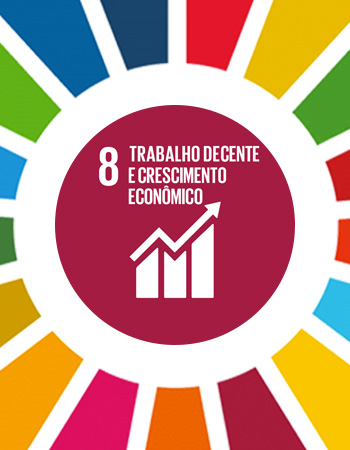
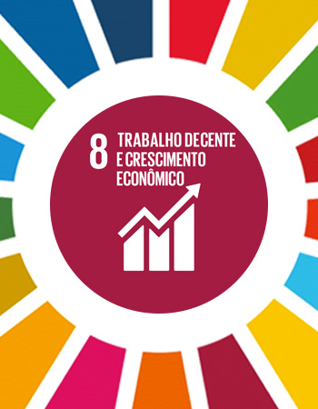
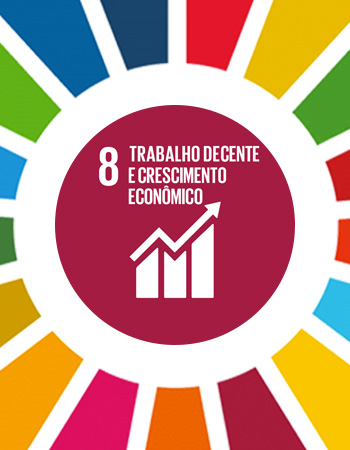

O ODS número 8, ou Objetivo de Desenvolvimento Sustentável 8, tem como foco"Trabalho Decente e Crescimento Econômico".Esse objetivo visa promover condições de trabalho justas, inclusivas e produtivas, além de estimular o crescimento econômico sustentável.